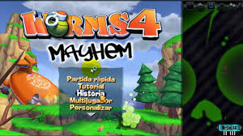
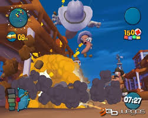

Worms es una serie de videojuegos del género de estrategia militar por turnos. En estos juegos se enfrentan dos o más jugadores que controlan uno o varios personajes durante cierto tiempo, con el objetivo de eliminar los personajes de los
adversarios. Entre sus predecesores se encuentran Scorched Earth y Gorillas, aunque parece inspirado en los Lemmings. En este caso, los personajes son representados por gusanos ("Worms" significa "gusanos", en inglés) en una isla que flota en una
gran masa de agua con un ambiente caricaturesco, contando con animación brillante y humorística de dibujos animados y un variado arsenal de armas ficticias.
Worms
$ 150
Desripción
Cada jugador controla un equipo de varios gusanos. Durante el transcurso del juego, los jugadores se turnan para seleccionar uno de sus gusanos. Luego usan las herramientas y armas disponibles para atacar y matar los gusanos de los oponentes, ganando
así el juego. Los gusanos pueden moverse por el terreno en una variedad de formas, normalmente caminando y saltando, pero también usando herramientas particulares como el "Bungee" y "Ninja Rope", para moverse a áreas de otra manera inaccesibles. Cada
turno es limitado en el tiempo para asegurar que los jugadores no mantengan el juego con un pensamiento excesivo o moviéndose. El límite de tiempo puede ser modificado en algunos juegos de la serie Worms. Más de cincuenta armas y herramientas pueden
estar disponibles cada vez que se juega un juego, y diferentes selecciones de armas y herramientas se pueden guardar en un "esquema" para la selección fácil en los juegos futuros. Otros ajustes del esquema permiten opciones tales como el despliegue
de cajas de refuerzo, de las cuales se pueden obtener armas adicionales, y la muerte súbita donde el juego se apresura a una conclusión después de que expire un límite de tiempo. Algunos ajustes proporcionan la inclusión de objetos tales como minas
terrestres y barriles explosivos.